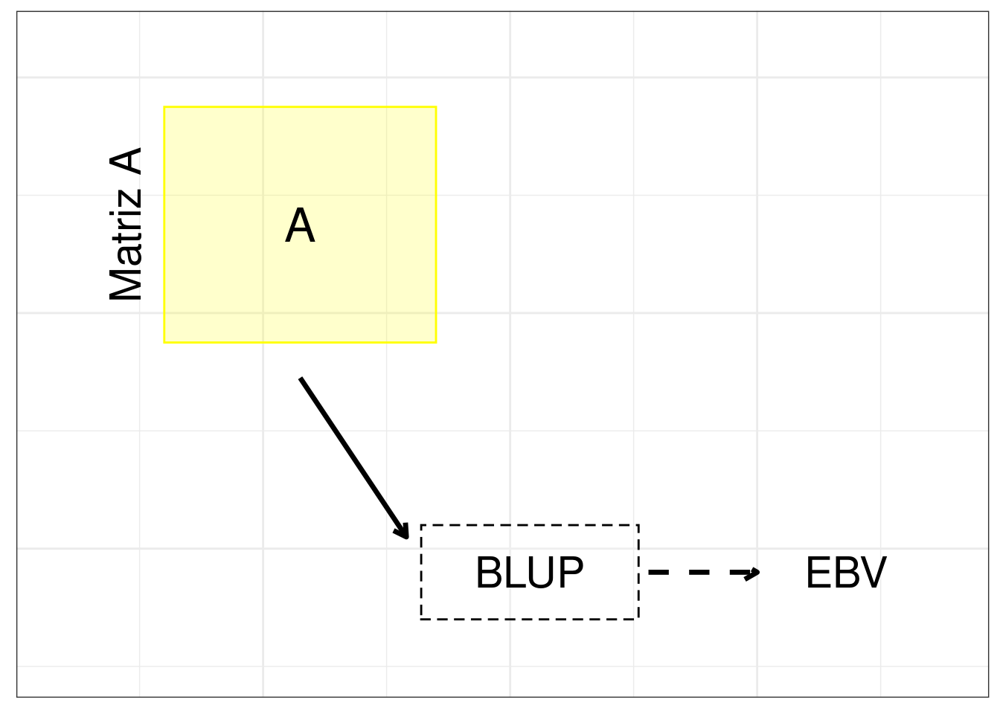
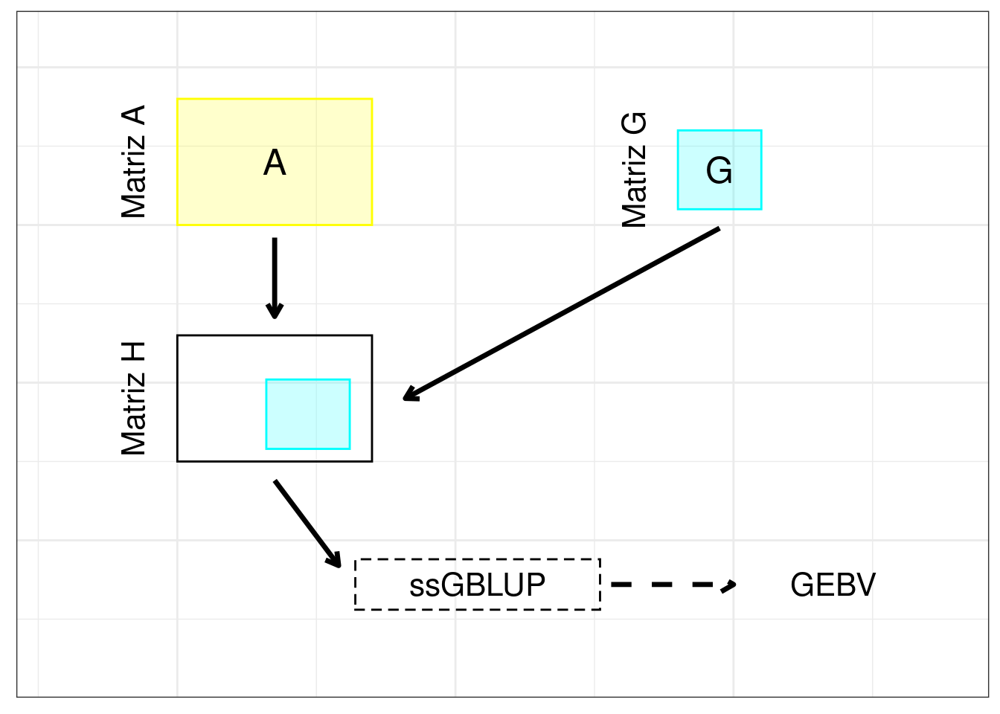

Modelos de predicción
Los datos del carácter tiempo de floración los analice utilizando los métodos del mejor predictor lineal insesgado (BLUP) y del mejor predictor lineal insesgado genómico de un solo paso (ssGBLUP), y las precisiones de la predicción las calculé a través del coeficiente de correlación entre los valores fenotípicos observados y predichos.
BLUP
Para llevar a cabo la predicción usando el BLUP en individuos no genotipados, se aplicó el siguiente modelo:
\[ \textbf{y} = \mu + \textbf{Z} \textbf{g} + \textbf{e}, \] donde \(y\) es el fenotipo a predecir, \(\mu\) es la media de la población, \(g\) representa los efectos aleatorios genéticos aditivos, \(Z\) es la matriz de incidencia que relaciona a \(g\) con \(y\), y \(e\) es el vector de residuos. Se asume que \(g\) ~ \(N(0, A \sigma_{g}^{2})\), donde \(A\) representa la matriz de parentesco basada en información del pedigrí, y que \(\sigma_{g}^{2}\) es la varianza genética aditiva. Se asume también que \(e\) ~ \(N(0, I \sigma_{e}^{2})\), siendo \(I\) la matriz identidad, y \(\sigma_{e}^{2}\) la varianza residual.
La figura a continuación (Figure 1) representa el método BLUP.

ssGBLUP
El método ssGBLUP (Legarra, Aguilar, and Misztal 2009) incluye información de individuos genotipados y no genotipados mediante la combinación de la matriz de parentesco basada en información genómica (matriz G) y la matriz A. Este método utiliza el mismo modelo anterior con la excepción de que \(g\) ~ \(N(0, H \sigma_{g}^{2})\), donde \(H\) es la matriz de parentesco combinada, cuya estructura se observa a continuación:
\[ H = \begin{bmatrix} A_{11} + A_{12} A_{22}^{-1} ( G - A_{22} ) A_{22}^{-1} A_{21} & A_{12} A_{22}^{-1} G \\ G A_{22}^{-1} A_{12}' & G \end{bmatrix} , \]
donde \(A_{11}\), \(A_{12}\), \(A_{21}\) y \(A_{22}\) son submatrices de A, siendo \(A_{11}\) la submatriz de los individuos sin genotipo, \(A_{22}\) la submatriz de los individuos con genotipo, y \(A_{12}\) y \(A_{21}\) las submatrices que contienen las relaciones genéticas aditivas esperadas entre individuos con genotipo y sin genotipo. Para el cálculo de la matriz H, se obtuvo la matriz G utilizando el método de (VanRaden 2008), \(\frac{XX'}{2 \sum_{j=1}^{nSNP} p_{j} (1 - p_{j})}\), donde \(X\) es una matriz de dimensión n x nSNP que contiene los genotipos, \(p_{j}\) es la frecuencia del j-ésimo SNP, \(n\) corresponde al número de individuos y nSNP representa al número de SNP.
La figura a continuación (Figure 2) representa el método ssGBLUP.

Al comparar los métodos BLUP y ssGBLUP, con el ssGBLUP se obtienen predicciones más precisas y una selección más eficiente de genotipos superiores, en virtud de una mejor estimación del parentesco entre individuos. Esto último debido al uso de información genómica y a la construcción a través de esta información de matrices de relación realizadas.